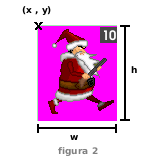

Grilla de gráficos y animaciones (I)
Créditos
- Autor: Hugo Ruscitti
- Fecha: 27 de Marzo del 2005
Introducción
Veremos como almacenar varios cuadros de animación en un solo archivo para realizar una animación muy simple.
Esto nos resultará de utilidad para manejar animaciones y comprender los próximos artículos. Creando los gráficos del personaje
Para mostrar una animación tendremos que imprimir uno a uno varios cuadros de animación. Nos resultará de mucha utilidad almacenar cada uno de estos cuadros en un único fichero gráfico.
En este caso utilizamos una imagen con 18 cuadros de animación.
Nos referiremos a esta imagen como 'grilla', porque contiene varios rectángulos de igual tamaño con los cuadros de animación de nuestro personaje.
Imprimir un cuadro en particular
Para imprimir 1 de los 18 cuadros que contiene la imagen, podremos utilizar la función SDL_BlitSurface de la biblioteca SDL, procurando imprimir sólo una zona de la grilla en pantalla.
 La figura 1 muestra este planteo. En memoria tenemos almacenada una grilla con todos los cuadros de animación (apuntada por ima) y en la pantalla del monitor vemos la superficie apuntada por screen.
La figura 1 muestra este planteo. En memoria tenemos almacenada una grilla con todos los cuadros de animación (apuntada por ima) y en la pantalla del monitor vemos la superficie apuntada por screen.
La función SDL_BlitSurface tiene 4 parámetros:
- SDL_Surface *scr: la superficie fuente de la impresión, para este caso será la grilla con los cuadros de animación.
- SDL_Rect *srcrect: el rectángulo que deseamos capturar de la superficie fuente.
- SDL_Surface *dst: la superficie destino de impresión, screen para este caso.
- SDL_Surface *dstrect: la posición destino, dentro de la superficie dst, para el gráfico capturado con srcrect.
Cada cuadro de la grilla tiene un numero de cuadro asignado: 0, 1, 2 … hasta 17
Para imprimir un gráfico de la grilla necesitamos conocer:
- la cantidad total de filas en la grilla: 2
- la cantidad total de columnas en la grilla: 9
- el número de cuadro a imprimir: (varía con la animación)
- ancho y alto de la grilla completa: tomados desde ima
Con estos datos podremos calcular exactamente el bloque o rectángulo que corresponde a la imagen que deseamos imprimir.  La figura 2 muestra con mayor detalle el proceso. Tendremos que calcular el rectángulo a recortar definiendo su posición 'x' e 'y', además de su área 'w' y 'h' (ancho y alto).
{kind=link}
Con los datos mostrados anteriormente, podemos aplicar una fórmula para obtener los datos del rectángulo:
componentes del rectángulo:
- w = ancho_de_la_grilla / nro_columnas
- h = alto_de_la_grilla / nro_filas
- y = (indice_grafico / nro_columnas) * h
- x = (indice_grafico % nro_filas) * w
Ejemplo
El programa de ejemplo consiste en una animación de 14 cuadros.

La función más importante de este ejemplo es 'imprimir':
void imprimir(SDL_Surface *dst, SDL_Surface *ima, int cuadro, int fil, int col) { SDL_Rect srcrect; SDL_Rect dstrect = {100, 50, 0, 0}; if (cuadro > fil * col || cuadro < 0) { printf("error, no se puede acceder al cuadro %d\n", cuadro); return; } srcrect.w = ima->w / col; srcrect.h = ima->h / fil; srcrect.x = (cuadro % col) * srcrect.w; srcrect.y = (cuadro / col) * srcrect.h; /* se evita imprimir la linea que divide cada cuadro */ srcrect.x ++; srcrect.y ++; srcrect.w --; srcrect.h --; SDL_BlitSurface(ima, &srcrect, dst, &dstrect); }
Conclusión:
En un video-juego tendremos que mostrar gráficos en todo momento. Es muy importante simplificar el manejo de animaciones y estados (que veremos en el próximo artículo).
Créditos
Se permite la copia, modificación y distribución de este artículo sólo bajo los términos de la GNU Free Documentation License